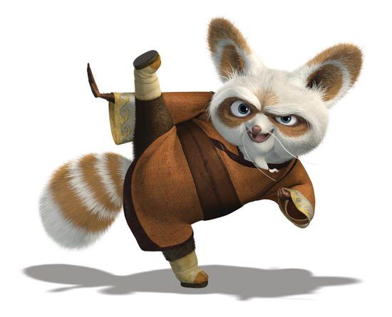

Let us make a fact clear - growth does not happen upwards only. A money plant grows sidewards. The roots of a tree grow downwards. And so are promotions. Promotions are not a lift that takes you only upwards.
In an organization where we only have four levels, it can get extremely tough for people to be promoted. And we understand that a lack of career progression can make things look bleak. And we do not have a readymade answer to that. But we came up with a solution for that. And although it may not be perfect, e believe that it can work for many organizations across the world.
While we have only four levels, we have lots of teams. And each of these teams comprises a lot of people doing a lot of things. And all of us are part of a tribe. We know it can get confusing, so let us explain.
These ‘things’ are what the world calls jobs and what we call roles. A developer is a role. A digital marketer is a role. A development lead is a role. Development, or Digital Marketing, on the other hand, is a tribe. Finance, Legal, and Operations - are all tribes. Even Executive Leadership is a tribe. Caution - a mobile developer is not a rule, but just a specialization in a role.
Let us stick on with the developer for some time. Newbie developers will start off their careers with us as junior developers. The junior developers can later progress to become developers, senior developers, principal developers, expert developers, and ninja developers (the sacred ones who code at the altar of coding and look at their GitHub repositories instead of Facebook). A developer can become proficient in mobile development or become an exponent of a particular programming language or technology framework.
We call the above hierarchy the ‘Levels of Expertise’.
Similarly, there will be different levels of expertise for all the roles in TDW - for a digital marketer, for a designer, for a product manager, and so on. We will have the details of all the levels of expertise on our internal site.
An employee is promoted when he or she is moved to the next level of expertise.
In case an employee wants to shift to another tribe, he or she will be considered for an appropriate level in the new tribe that is consistent with his or her expertise. For example, if a senior developer wants to be part of the design tribe, he or she will have to demonstrate their expertise in ‘product design’, measured through a series of assessments post which the shift to a new tribe will happen.
OK, so how do I get promoted to the next level?
Let us reveal the secret to you. As we said, the executive leadership is a tribe. This means that function leadership, and team leadership are also tribes. In case a principal developer wants to become the lead of a development team, he or she will have to satisfy the capabilities that are required to join the tribe, post which they will be moved to the new team.
This means that there will be people with an experience of 5 years leading a team of people with experience ranging from 1 year to 20 years. Which is OK. And also a reflection that many people do not want to become team leaders or function leaders in the long run. They don’t want an easy life.
You can also create a tribe. In case you feel that you got a great idea and you require a new tribe, or you became an expert in an area where you do not have the expertise, you can go ahead and create a new tribe.
So, how often do we get promoted?
Your readiness to be promoted to the next level is assessed every six months, and you are eligible for a promotion to the next level in your tribe every year. But remember, things get tougher as you get to move up in your tribe, and it may take up to two to three years to build mastery at one individual level. Do not forget, Master Shifu did not become a master in one year.
In essence, we want you to grow, and grow fast, but we also want to make sure that you don’t forget to wear your seat-belt when you surge ahead.